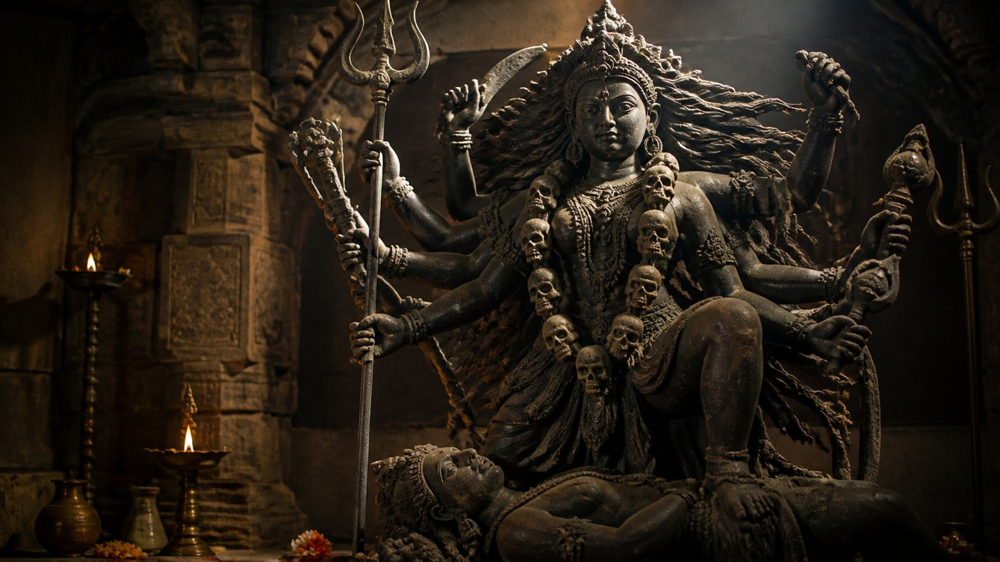

क्या बीमार शरीर में स्वस्थ मन रह सकता है?
कहा जाता है, स्वस्थ शरीर में ही स्वस्थ मन रहता है। यदि शरीर ठीक नहीं, तो मन भी ठीक नहीं रह सकता।
और इसका उल्टा भी उतना ही सच है। यदि मन ठीक नहीं, तो शरीर भी ठीक नहीं रहेगा।
शास्त्र कहता है कि आत्मा से उतरते-उतरते हम शरीर तक आ पहुंचे हैं। अब इसी शरीर को पुष्ट करते हुए हमें धीरे-धीरे, बार-बार इससे बाहर निकलना है। और एक बात स्पष्ट है: समाधि के समय रोगी अवस्था नहीं चलेगी।
साधना का क्रम: चार सीढ़ियां
आचार्य जी इस पूरी यात्रा को एक सरल क्रम में रखते हैं: रोगी से निरोगी, निरोगी से भोगी, भोगी से सिद्धि, और सिद्धि से मुक्ति।
- १रोगी से निरोगी: पहले शरीर और मन का स्वस्थ होना।
- २निरोगी से भोगी: जीवन के भोगों का सच्चा अनुभव।
- ३भोगी से सिद्धि: शक्ति, सामर्थ्य और विशालता की ओर।
- ४सिद्धि से मुक्ति: मोक्ष (liberation), जो सिद्धियों से भी ऊपर है।
पहली सीढ़ी सबसे आवश्यक है। रोगी अवस्था में किसी को मोक्ष नहीं मिलता।
दर्द में "मैं शरीर नहीं हूं" कहकर दिखाओ
"मैं यह शरीर नहीं हूं, यह शरीर मेरा है", इस भावना से ही मोक्ष हो जाता है। सुनने में यह बहुत सरल लगता है।
पर आचार्य जी एक सीधा प्रश्न रखते हैं। नाखून भी टूट जाए, तो उस दर्द के समय कहकर दिखाओ कि "मैं यह शरीर नहीं हूं, मैं तो यहां केवल खेलने आया था।"
और यह तो केवल नाखून की बात है। जब पेट में, फेफड़ों में, यकृत में कर्क रोग हो, हर क्षण पीड़ा हो, हृदयाघात आ जाए, तब? उस समय तो मनुष्य शरीर से ही पूरी तरह जुड़ जाता है।
क्या मेरा "मैं शरीर नहीं हूं" वाला ज्ञान केवल आराम के समय का है, या पीड़ा में भी टिकता है?
निरोगी ही सच्चा भोगी हो सकता है
सोचकर देखिए, रोगी व्यक्ति क्या भोग भोगेगा?
पूरा जीवन कष्ट उठाया ताकि बाद में अच्छे व्यंजन खा सकें। फिर आ गया मधुमेह, और चिकित्सक ने कहा मीठा बंद। कुछ समय बाद नमक भी बंद, क्योंकि अब हृदय की समस्या शुरू हो गई।
परिश्रम से सुंदर सोफा बनवाया, और अब रीढ़ की हड्डी की समस्या है। चिकित्सक कहते हैं, समतल सतह पर सोना है, सोफा नहीं। बड़े-बड़े घर, बंगले ले लिए, पर घूम-फिर नहीं सकते। आचार्य जी कहते हैं कि यदि हम स्वस्थ नहीं हैं, तो भोग भी नहीं मिलता।
जब मन ही बीमार हो
बात केवल शरीर की नहीं है। बहुत बड़ा बंगला है, पर उसमें चैन से बैठ नहीं सकते। मन में व्याधियां हैं, संताप है।
तो क्या उस बंगले का सचमुच उपभोग हुआ? नहीं। उपभोग की सामग्री सब है, पर असली उपभोग शून्य है। जब तक शरीर और मन दोनों स्वस्थ नहीं, तब तक भोग भी असली नहीं।
मेरे पास जो कुछ है, क्या मैं सचमुच उसका आनंद ले पा रहा हूं?
भोग के बाद क्या? विशाल बनो
मान लो, भोगी बन गए, जीवन के सब भोग भोग लिए। तो क्या यही जीवन का अंतिम पड़ाव है?
आचार्य जी कहते हैं कि अब साधारण व्यक्ति बनकर नहीं रहना है, बल्कि यह समझना है कि मेरा स्वरूप अनंत है, तो मेरे अंदर अनंत शक्तियां हैं।
पर इसकी नींव पहले रखनी होगी: शुद्ध भावना, निर्मल मन, निश्चल मन, विशाल मन। उसके बाद महान बनने का विचार।
अस्पताल खोलना है, तो एक छोटा सा क्यों? पूरी शृंखला क्यों नहीं? प्रवचन करना है, तो केवल चार लोगों तक क्यों? पूरे विश्व तक पहुंचे। यह हमारा स्वभाव है।
सिद्धियां क्या हैं?
सिद्धि का अर्थ है कोई विशेष शक्ति (spiritual power)। यह शारीरिक भी हो सकती है, यानी शक्तिशाली और सशक्त बनना, और आध्यात्मिक भी।
हनुमान जी के लिए हम गाते हैं:
अष्ट सिद्धि नव निधि के दाता। अस बर दीन जानकी माता॥
"हनुमान जी आठ सिद्धियों और नौ निधियों के दाता हैं।"
(हनुमान चालीसा, चौपाई ३१)
हर भगवान ने कोई ना कोई चमत्कार किया, यानी सिद्धियां उनके पास थीं।
सिद्धियां अनेक हैं: वाक् सिद्धि (वाणी का सत्य होना), संकल्प सिद्धि, अणिमा (छोटा होना), लघिमा, गरिमा (बड़ा या भारी होना), परकाया प्रवेश (दूसरे शरीर में प्रवेश), और हवा में उड़ना, जिसे उत्प्लवन (levitation) कहते हैं।
शक्ति क्यों आवश्यक है?
पर शक्तिशाली भी वही बन पाएगा जो निरोगी है। सोचिए, एक नेता है, पर उसमें ताकत नहीं, आवाज़ नहीं, रोज़ दवा लेकर बैठा है। क्या यह चलेगा?
आध्यात्मिक व्यक्ति के पास भी केवल प्रवचन नहीं होने चाहिए। कोई उस पर काला जादू कर दे, तो सुरक्षा चाहिए कि नहीं?
हमारे ऋषि-मुनियों के पास शस्त्र नहीं थे। पर एक श्राप दे दें, तो लोग सामने आने से डरते थे।
इसलिए शारीरिक रूप से शक्तिशाली बनो, या आध्यात्मिक रूप से, या कम से कम बुद्धि से इतने कि कोई आपके क्षेत्र में आपसे टक्कर ना ले सके।
प्रतिकार शक्ति: महाकाली और भैरवी
जब महाकाली की शक्ति, भैरवी शक्ति आपके पास आती है, तो दूसरों में आपके प्रति भय भी होना चाहिए। आतंक फैलाने के लिए कभी नहीं, बल्कि इसलिए कि कोई आपका अनुचित लाभ ना उठा सके।
यही प्रतिकार शक्ति (the power to resist) है। अपने क्षेत्र में सिद्ध पुरुष बनो, अत्यंत शक्तिशाली बनो।

सावधान: सिद्धि का दुरुपयोग
सिद्धियां आने के बाद व्यक्ति लोगों के बहुत से काम करने लगता है। जिसके पास उपचार की सिद्धि (healing) होती है, वह कई बार वहीं से अपनी दुकान खोल लेता है।
इस वैश्य-भाव, यानी व्यापारी वाले भाव के कारण, लोगों के रोग वापस उसी पर आ जाते हैं। वह फिर से रोगी बन जाता है। यह स्वीकार्य नहीं है, क्योंकि उसने सिद्धियों का गलत उपयोग किया।
सिद्धि से ऊपर मुक्ति
सिद्धि से ऊपर मुक्ति है। इसलिए पहले मोक्ष की स्थिति प्राप्त करनी है। सिद्धियों का उपयोग तुरंत शुरू किया, तो वे पतन का कारण बनेंगी।
शास्त्रों में सिद्धियों को विष्ठा के समान, त्यागने योग्य कहा गया है।
पर जब साधक जीवन्मुक्त (जीते-जी मुक्त) हो जाता है, तब वह इनका सही उपयोग कर सकता है। श्रीकृष्ण ने, श्रीराम ने, हर गुरु और हर अवतार ने सिद्धियों का उपयोग किया। संत ज्ञानेश्वर माउली ने दीवार उड़ाकर दिखाई थी।
महान गुरु बीमार क्यों दिखते हैं?
मुक्त होने के बाद ऊर्जा का आदान-प्रदान होता है। इसलिए मुक्त गुरु भी रोगी हो सकते हैं। पर वह रोग उनका अपना नहीं, दूसरों का होता है।
इसीलिए रामकृष्ण परमहंस और रमण महर्षि कर्क रोग के साथ दिखते हैं, और विवेकानंद जी मधुमेह के साथ। उन्होंने मुक्त होने के बाद दूसरों के कर्म अपने ऊपर लिए। वे इस रोगी अवस्था में भी मोक्ष प्राप्त कर लेंगे। पर साधारण साधक नहीं कर पाएगा।
हलाहल विष: गुरु ही शिव है
मुक्ति के बाद लोगों के कर्म अपने ऊपर लेना ही हलाहल विष पीना है। तभी आप शिवजी बनते हो। आचार्य जी बताते हैं कि जीवन्मुक्त गुरु ही शिव है, और शिव ही गुरु है।
जो रोग आते हैं, उन्हें निकाल पाए तो ठीक; अधिक हो गए, तो कर्म और प्रारब्ध (पिछले कर्मों का फल जो इस जीवन में भोगना है) के अनुसार भोगने पड़ते हैं।
साधारण व्यक्ति और सद्गुरु के रोग में अंतर
साधारण व्यक्ति रोग आते ही भागता है: "दवाई चाहिए, दर्द हो रहा है, कुछ तो करो डॉक्टर साहब!" यह जांच, वह जांच।
सद्गुरु दवा लेने से इनकार नहीं करता। पर वह जानता है कि यह रोग किसके कारण आया है। उसने सचेत होकर यह विष लिया है, इसलिए वह रोता नहीं। दवा मिली तो ठीक, नहीं मिली तो भी ठीक। वह समझता है कि यह प्रारब्ध है, और कब तक के लिए है।
जब मेरे जीवन में पीड़ा आती है, तो मेरी प्रतिक्रिया किसके जैसी होती है?
मुख्य बातें
- स्वस्थ शरीर में स्वस्थ मन रहता है, और स्वस्थ मन से ही शरीर स्वस्थ रहता है।
- साधना का क्रम है: रोगी से निरोगी, निरोगी से भोगी, भोगी से सिद्धि, सिद्धि से मुक्ति।
- रोगी अवस्था में मोक्ष नहीं मिलता; पीड़ा में "मैं शरीर नहीं हूं" टिकता नहीं।
- शरीर और मन स्वस्थ ना हों, तो भोग की सामग्री होते हुए भी असली उपभोग शून्य है।
- शुद्ध, निर्मल, निश्चल और विशाल मन के बाद महान और शक्तिशाली बनने का प्रयास करो।
- सिद्धियां सुरक्षा और प्रतिकार शक्ति देती हैं, पर मुक्ति से पहले उनका उपयोग पतन लाता है।
- जीवन्मुक्त गुरु दूसरों का हलाहल विष लेता है, और रोग को प्रारब्ध मानकर शांति से सहता है।